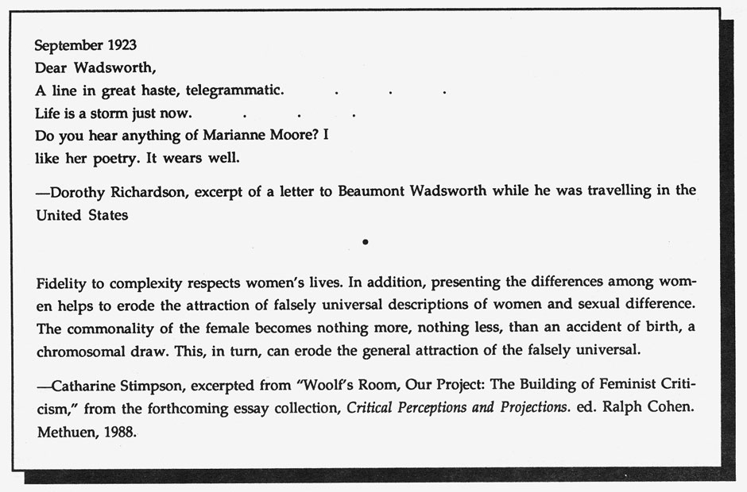

Editor's Notes

I, too, dislike it.
 Reading it, however, with a perfect contempt for it,
Reading it, however, with a perfect contempt for it,
 one discovers in
one discovers in
 it, after all, a place for the genuine.
it, after all, a place for the genuine.
 --"Poetry," by Marianne Moore,
--"Poetry," by Marianne Moore,
 from
The
Complete Poems of Marianne Moore,
from
The
Complete Poems of Marianne Moore,
 Penguin, NY.
Penguin, NY.
Marianne Moore, with her "perfect contempt" for an idea and practice of poetry that had, in her literary milieu, perhaps, been reduced by stifling limits, provides us with a warning and an invitation--the alternatives that HOW(ever) proposes: Our interest in the structural re-invention of the poem's terms, as well as the range of female experiences informed by those structures, is suggested and supported by Moore's refusal of pre-existing forms and the continuous search for her own modalities and formal shapes. It is with this sense of a female tradition of "making our own," provided by the modernist women poets, that we salute Marianne Moore in this issue. Recent arrivals: Heroine, a novel, by Gail Scott, Coach House Press, Toronto; The Mexican Murals, poems and essays, Cynthia Kraman, e.g. Press, San Francisco; Japan, poems, by Maxine Chernoff, Avenue B, Bolinas; W.C. Fields in Frenchlight, poems by Rochelle Owen, Contact II Publications, New York; Notes preceding trust, poems and prose, by Kathleen Fraser, The Lapis Press, Santa Monica; recent poet/artist interviews, in chapbook form, from the Bench Press Series on Art, edited by Madeleine Keller (141 W. 24th St., New York, NY 10011) . . . the first, combining interviews with Bernadette Mayer (including a discussion of her writing of Utopia, as well as her own thoughts on language, style and process) and the NY painter, Lois Dodd; the second, a double interview and conversation between the fiction writer/critic, Carol Ascher, and the poet/critic, Rachel Blau DuPlessis. Correction and apology to Susan Roberts, whose bio note in H(er) IV, No. 2, mistakenly listed her forthcoming chapbook as Cherries in the Snow. The correct title is Cherries in the Afternoon, and will be published by Abacus (Potes and Poets Press).
The next issue of HOW(ever) will be looking at connections between the language of film and women poets working out of that vocabulary. Postcards should be sent to Susan Gevirtz, 578 Precita, San Francisco, CA 94110. Manuscript reading for future issues will come to a halt temporarily, due to the abundance of work received, but will resume again in September, 1988. At that time, poetry as well as informal critical pieces for Alerts may be sent to Kathleen Fraser, 1936 Leavenworth, San Francisco, CA 94133.
HOW(ever),
ISSN 0895-5-5743, is available in a fourth series of four numbers. For libraries interested in purchasing the complete series, beginning with Vol. I, we have a limited number of archival sets. Archival sets cost $12 per volume for individuals; $15 for institutions. Subscriptions for Vol. IV cost $8 for individuals; $10 for institutions. Individual copies of
HOW(ever),
often asked for as "sample copies," are available at $2.50 each from Small Press Distribution, 1814 San Pablo, Berkeley, CA 94702. Subscription checks go to
HOW(ever),
c/o Jaffer, 871 Corbett Ave., San Francisco, California 94131.
 go to this issue's table of contents